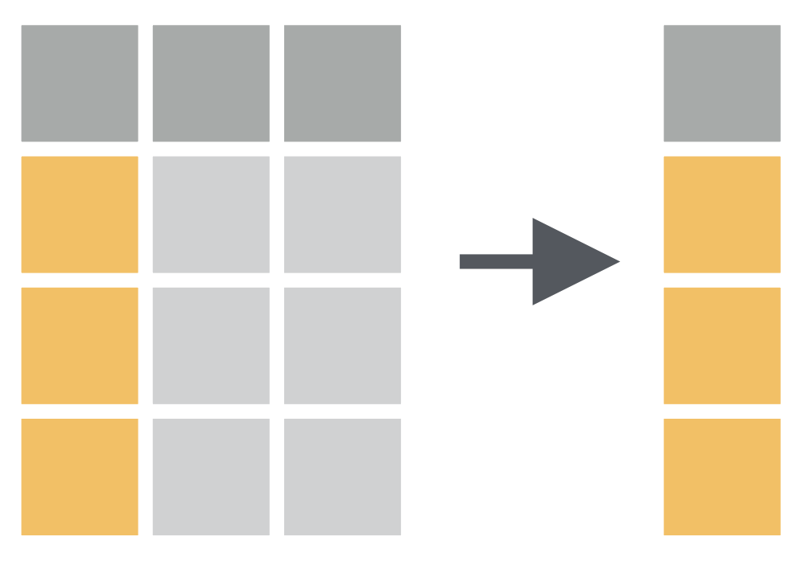

Data Wrangling
“data exploration and data manipulation” by Jesse Mostipak
“tidying and transforming” by Hadley & Garrett
Transforming Data
“narrowing in on observations of interest …
creating new variables that are functions of existing variables and …
calculating a set of summary statistics.”
R Package dplyr
dplyr Package
“dplyr is a grammar of data manipulation”
“providing a consistent set of verbs that help you solve the most common data manipulation challenges:”
dplyr Functions:
filter()select()mutate()arrange()summarise()
filter() Function:
Picks cases/observations based on their values.

filter() Function
How to have a data of only Gentoo penguins?

# A tibble: 124 × 8
species island bill_length_mm bill_depth_mm flipper_length_mm body_mass_g
<fct> <fct> <dbl> <dbl> <int> <int>
1 Gentoo Biscoe 46.1 13.2 211 4500
2 Gentoo Biscoe 50 16.3 230 5700
3 Gentoo Biscoe 48.7 14.1 210 4450
4 Gentoo Biscoe 50 15.2 218 5700
5 Gentoo Biscoe 47.6 14.5 215 5400
6 Gentoo Biscoe 46.5 13.5 210 4550
7 Gentoo Biscoe 45.4 14.6 211 4800
8 Gentoo Biscoe 46.7 15.3 219 5200
9 Gentoo Biscoe 43.3 13.4 209 4400
10 Gentoo Biscoe 46.8 15.4 215 5150
# ℹ 114 more rows
# ℹ 2 more variables: sex <fct>, year <int>Wait! What the f* is |>
This is called native pipe operator
|>let you “pipe” an object forward to a function or call expressionallowing you to express a sequence of operations that transform an object.
ctrl + shift + m =
|>
filter() Function
How to have a data of penguins of bill length more than 43 mm?

# A tibble: 188 × 8
species island bill_length_mm bill_depth_mm flipper_length_mm body_mass_g
<fct> <fct> <dbl> <dbl> <int> <int>
1 Adelie Torgersen 46 21.5 194 4200
2 Adelie Dream 44.1 19.7 196 4400
3 Adelie Torgersen 45.8 18.9 197 4150
4 Adelie Dream 43.2 18.5 192 4100
5 Adelie Biscoe 43.2 19 197 4775
6 Adelie Biscoe 45.6 20.3 191 4600
7 Adelie Torgersen 44.1 18 210 4000
8 Adelie Torgersen 43.1 19.2 197 3500
9 Gentoo Biscoe 46.1 13.2 211 4500
10 Gentoo Biscoe 50 16.3 230 5700
# ℹ 178 more rows
# ℹ 2 more variables: sex <fct>, year <int>ü߆ YOUR TURN
How to have a data of only Adele penguins?
How to have a data of penguins of bill depth more than 10 mm?
# A tibble: 152 × 8
species island bill_length_mm bill_depth_mm flipper_length_mm body_mass_g
<fct> <fct> <dbl> <dbl> <int> <int>
1 Adelie Torgersen 39.1 18.7 181 3750
2 Adelie Torgersen 39.5 17.4 186 3800
3 Adelie Torgersen 40.3 18 195 3250
4 Adelie Torgersen NA NA NA NA
5 Adelie Torgersen 36.7 19.3 193 3450
6 Adelie Torgersen 39.3 20.6 190 3650
7 Adelie Torgersen 38.9 17.8 181 3625
8 Adelie Torgersen 39.2 19.6 195 4675
9 Adelie Torgersen 34.1 18.1 193 3475
10 Adelie Torgersen 42 20.2 190 4250
# ℹ 142 more rows
# ℹ 2 more variables: sex <fct>, year <int># A tibble: 342 × 8
species island bill_length_mm bill_depth_mm flipper_length_mm body_mass_g
<fct> <fct> <dbl> <dbl> <int> <int>
1 Adelie Torgersen 39.1 18.7 181 3750
2 Adelie Torgersen 39.5 17.4 186 3800
3 Adelie Torgersen 40.3 18 195 3250
4 Adelie Torgersen 36.7 19.3 193 3450
5 Adelie Torgersen 39.3 20.6 190 3650
6 Adelie Torgersen 38.9 17.8 181 3625
7 Adelie Torgersen 39.2 19.6 195 4675
8 Adelie Torgersen 34.1 18.1 193 3475
9 Adelie Torgersen 42 20.2 190 4250
10 Adelie Torgersen 37.8 17.1 186 3300
# ℹ 332 more rows
# ℹ 2 more variables: sex <fct>, year <int>10:00
filter() Function
How to have a data of Gentoo penguins of bill length more than 50 mm?
# A tibble: 22 × 8
species island bill_length_mm bill_depth_mm flipper_length_mm body_mass_g
<fct> <fct> <dbl> <dbl> <int> <int>
1 Gentoo Biscoe 50.2 14.3 218 5700
2 Gentoo Biscoe 59.6 17 230 6050
3 Gentoo Biscoe 50.5 15.9 222 5550
4 Gentoo Biscoe 50.5 15.9 225 5400
5 Gentoo Biscoe 50.1 15 225 5000
6 Gentoo Biscoe 50.4 15.3 224 5550
7 Gentoo Biscoe 54.3 15.7 231 5650
8 Gentoo Biscoe 50.7 15 223 5550
9 Gentoo Biscoe 51.1 16.3 220 6000
10 Gentoo Biscoe 52.5 15.6 221 5450
# ℹ 12 more rows
# ℹ 2 more variables: sex <fct>, year <int>filter() Function
How to have a data of non-Gentoo penguins of bill length more than 50 mm and weight more than 4 kg?
# A tibble: 11 × 8
species island bill_length_mm bill_depth_mm flipper_length_mm body_mass_g
<fct> <fct> <dbl> <dbl> <int> <int>
1 Chinstrap Dream 52 18.1 201 4050
2 Chinstrap Dream 50.5 19.6 201 4050
3 Chinstrap Dream 52 19 197 4150
4 Chinstrap Dream 52.8 20 205 4550
5 Chinstrap Dream 54.2 20.8 201 4300
6 Chinstrap Dream 51 18.8 203 4100
7 Chinstrap Dream 52 20.7 210 4800
8 Chinstrap Dream 53.5 19.9 205 4500
9 Chinstrap Dream 50.8 18.5 201 4450
10 Chinstrap Dream 50.7 19.7 203 4050
11 Chinstrap Dream 50.8 19 210 4100
# ℹ 2 more variables: sex <fct>, year <int>ü߆ YOUR TURN
How to have a data of penguins only from the Dream island which have bill depth more than 7 mm and weight more than 3 kg?
# A tibble: 118 × 8
species island bill_length_mm bill_depth_mm flipper_length_mm body_mass_g
<fct> <fct> <dbl> <dbl> <int> <int>
1 Adelie Dream 39.5 16.7 178 3250
2 Adelie Dream 37.2 18.1 178 3900
3 Adelie Dream 39.5 17.8 188 3300
4 Adelie Dream 40.9 18.9 184 3900
5 Adelie Dream 36.4 17 195 3325
6 Adelie Dream 39.2 21.1 196 4150
7 Adelie Dream 38.8 20 190 3950
8 Adelie Dream 42.2 18.5 180 3550
9 Adelie Dream 37.6 19.3 181 3300
10 Adelie Dream 39.8 19.1 184 4650
# ℹ 108 more rows
# ℹ 2 more variables: sex <fct>, year <int>07:00
select() Function:
Picks variables/columns based on their names.
select() Function
select() Function
ü߆ YOUR TURN
How to have a data of variables sex, year, island and flipper length?
# A tibble: 344 × 4
sex year island flipper_length_mm
<fct> <int> <fct> <int>
1 male 2007 Torgersen 181
2 female 2007 Torgersen 186
3 female 2007 Torgersen 195
4 <NA> 2007 Torgersen NA
5 female 2007 Torgersen 193
6 male 2007 Torgersen 190
7 female 2007 Torgersen 181
8 male 2007 Torgersen 195
9 <NA> 2007 Torgersen 193
10 <NA> 2007 Torgersen 190
# ℹ 334 more rows05:00
üí° Tips for variable selection
Use
names()function to see the exact names and the order of the variables.Use
:operator to select the range of variables.
- Use location value of the variable.
- Use
-operator to not to select the range of variables.
# A tibble: 344 × 4
species body_mass_g sex year
<fct> <int> <fct> <int>
1 Adelie 3750 male 2007
2 Adelie 3800 female 2007
3 Adelie 3250 female 2007
4 Adelie NA <NA> 2007
5 Adelie 3450 female 2007
6 Adelie 3650 male 2007
7 Adelie 3625 female 2007
8 Adelie 4675 male 2007
9 Adelie 3475 <NA> 2007
10 Adelie 4250 <NA> 2007
# ℹ 334 more rowsü߆ YOUR TURN
How to have a data of variables from location first to fifth but without the variable island?
# A tibble: 344 × 4
species bill_length_mm bill_depth_mm flipper_length_mm
<fct> <dbl> <dbl> <int>
1 Adelie 39.1 18.7 181
2 Adelie 39.5 17.4 186
3 Adelie 40.3 18 195
4 Adelie NA NA NA
5 Adelie 36.7 19.3 193
6 Adelie 39.3 20.6 190
7 Adelie 38.9 17.8 181
8 Adelie 39.2 19.6 195
9 Adelie 34.1 18.1 193
10 Adelie 42 20.2 190
# ℹ 334 more rows05:00
mutate() Function:
Adds new variables that are functions of existing variables.

mutate() Function
How to convert body mass of penguins from grams to kilograms?
# A tibble: 344 × 2
body_mass_g body_mass_kg
<int> <dbl>
1 3750 3.75
2 3800 3.8
3 3250 3.25
4 NA NA
5 3450 3.45
6 3650 3.65
7 3625 3.62
8 4675 4.68
9 3475 3.48
10 4250 4.25
# ℹ 334 more rowsmutate() Function
ü߆ YOUR TURN
How to convert the bill dimensions from mm to cm?
# A tibble: 344 × 4
bill_length_mm bill_depth_mm bill_length_cm `bill_depth_mm/10`
<dbl> <dbl> <dbl> <dbl>
1 39.1 18.7 3.91 1.87
2 39.5 17.4 3.95 1.74
3 40.3 18 4.03 1.8
4 NA NA NA NA
5 36.7 19.3 3.67 1.93
6 39.3 20.6 3.93 2.06
7 38.9 17.8 3.89 1.78
8 39.2 19.6 3.92 1.96
9 34.1 18.1 3.41 1.81
10 42 20.2 4.2 2.02
# ℹ 334 more rows05:00
arrange() Function:
Changes the ordering of the rows.

arrange() Function
How to arrange data as per the bill length of the penguins?
# A tibble: 344 × 8
species island bill_length_mm bill_depth_mm flipper_length_mm body_mass_g
<fct> <fct> <dbl> <dbl> <int> <int>
1 Adelie Dream 32.1 15.5 188 3050
2 Adelie Dream 33.1 16.1 178 2900
3 Adelie Torgersen 33.5 19 190 3600
4 Adelie Dream 34 17.1 185 3400
5 Adelie Torgersen 34.1 18.1 193 3475
6 Adelie Torgersen 34.4 18.4 184 3325
7 Adelie Biscoe 34.5 18.1 187 2900
8 Adelie Torgersen 34.6 21.1 198 4400
9 Adelie Torgersen 34.6 17.2 189 3200
10 Adelie Biscoe 35 17.9 190 3450
# ℹ 334 more rows
# ℹ 2 more variables: sex <fct>, year <int>arrange() Function
How to see five penguins of the least bill length?
# A tibble: 5 × 8
species island bill_length_mm bill_depth_mm flipper_length_mm body_mass_g
<fct> <fct> <dbl> <dbl> <int> <int>
1 Adelie Dream 32.1 15.5 188 3050
2 Adelie Dream 33.1 16.1 178 2900
3 Adelie Torgersen 33.5 19 190 3600
4 Adelie Dream 34 17.1 185 3400
5 Adelie Torgersen 34.1 18.1 193 3475
# ℹ 2 more variables: sex <fct>, year <int>ü߆ YOUR TURN
How to see five penguins of the highest bill length?
# A tibble: 5 × 8
species island bill_length_mm bill_depth_mm flipper_length_mm body_mass_g
<fct> <fct> <dbl> <dbl> <int> <int>
1 Gentoo Biscoe 55.9 17 228 5600
2 Chinstrap Dream 58 17.8 181 3700
3 Gentoo Biscoe 59.6 17 230 6050
4 Adelie Torgersen NA NA NA NA
5 Gentoo Biscoe NA NA NA NA
# ℹ 2 more variables: sex <fct>, year <int>05:00
summarise() Function:
Reduces multiple values down to a single summary.

summarise() Function
summarise() Function
summarise() Function
summarise() Function
What is the species wise mean bill length of penguins and total number of penguins in each specie?
# A tibble: 3 × 3
species `mean(bill_length_mm)` n
<fct> <dbl> <int>
1 Adelie 38.8 146
2 Chinstrap 48.8 68
3 Gentoo 47.6 119ü߆ YOUR TURN
05:00